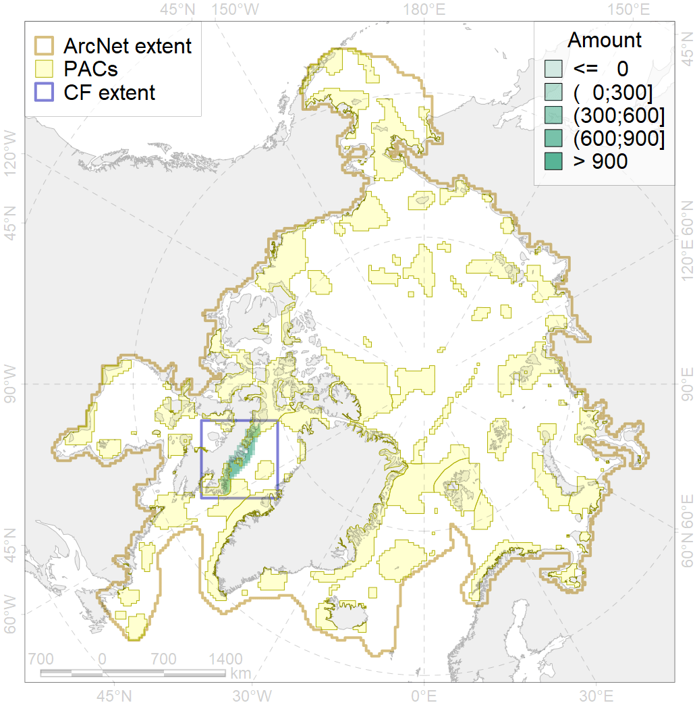
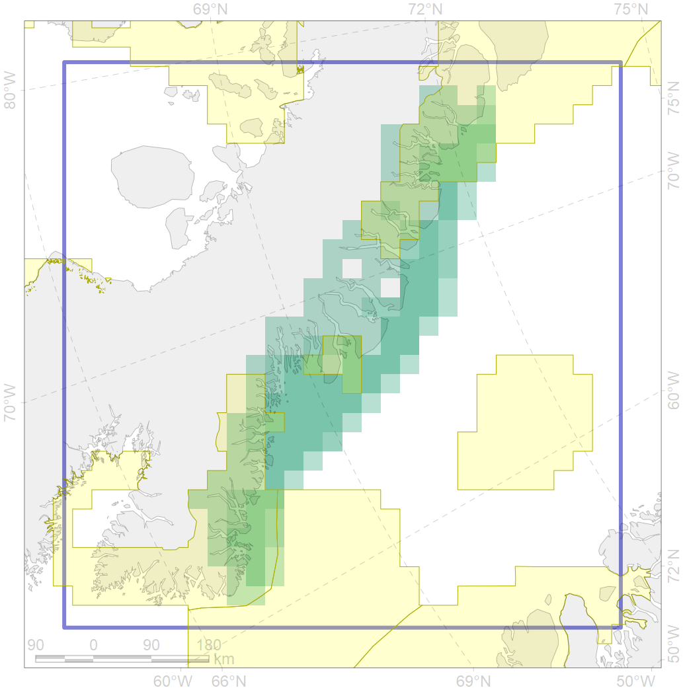

7019

| CF code | 7019 |
| CF name | Baffinian region |
| Time Period | 1900-2010 |
| Source(s) | Spiridonov et al., in prep. |
| Seasonality | 1-12 |
| Depth Horizon | Sea floor |
| Methodology | Boundaries derived from biogeographic regionalization scheme, which is in preparation for publication |
| Use Restrictions | Not for public use prior to publication (expected in early 2020) |
| Author Name | V. Spiridonov |
| Notes | |
| Scenario’s Target | 0.30605 |
| Target Achievement | 0.422 (Scenario: 137.9%) |
| PAC | Share of the Total Amount within the PAC | Share of the Target Achievement for the ArcNet | PAC’s Contribution to the Target Achievement |
|---|---|---|---|
| 45 | 1.3%3.4% | 3.9%10.1% | 2.8%7.3% |
| 46 | 16.9%18.2% | 53.5%57.4% | 38.8%41.6% |
| 50 | 5.7% | 17.1% | 12.4% |
| 52 | 16.0%16.0% | 48.5%48.5% | 35.2%35.2% |
| inner | 39.9%43.3% | 122.9%133.1% | 89.2%96.6% |
| outer | 60.1%60.3% | 14.9%15.5% | 10.8%11.2% |
| † supplement values are for area consistence whereas principal values are for Accenter compatible gridded stats |